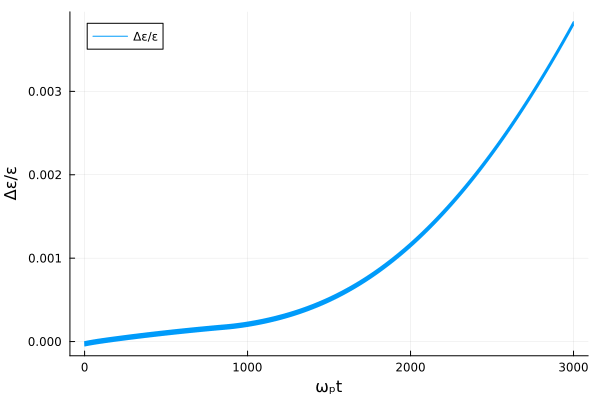
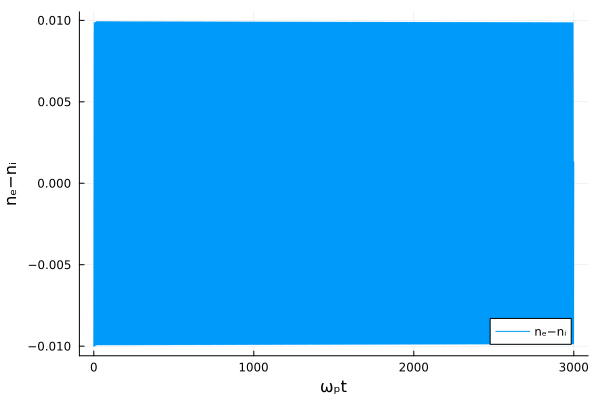
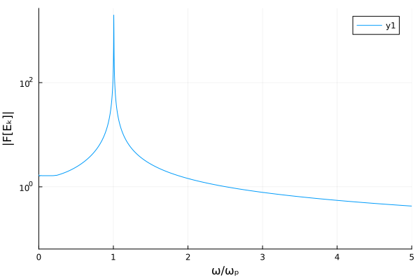
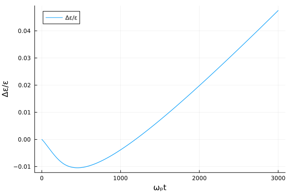
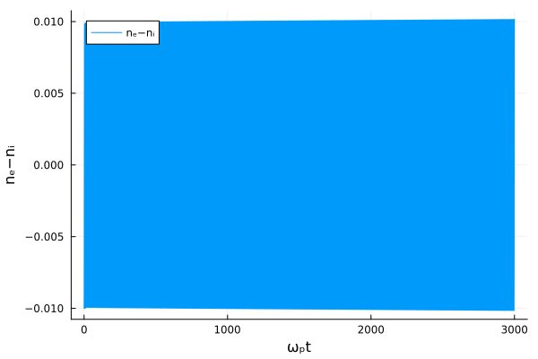

Plasma oscillations
using Plots
using FFTW
using Vasilek
figure(name) = joinpath(@__DIR__, "$name.png")Both runs go through the package's driver, vlasov_poisson: the loop, the Poisson solve and the energy diagnostics the test suite asserts on. This file used to carry two copies of that loop and its own Poisson solve.
const K = 2π/100
oscillation_f0(v, x) = [exp(-u^2/2)/sqrt(2π)*(1 + 0.01*cos(K*y)) for u in v, y in x]The density perturbation at the box centre, from the mode's field: n = ∂E/∂x, so nₖ = ikEₖ.
centre_density(r, x) = real.(im*K .* r.E_modes[:, 1] .* cis(K*x[end÷2]))Plasma oscillations on uniform grid
Here we perform a verification of long-lasting stability of the scheme for the case of longitudinal plasma oscillations.
Initial conditions for electrons are
\[f(x, v) = \frac{1}{\sqrt{2\pi}}\exp\left\{-\frac{v^2}{2}\right\}\left(1 + \tilde n\cos kx\right)\]
where velocities $v$ are normalised to a thermal velocity $v_{\rm th}$, concentration $n$ is normalized to equilibrium concentration $N_e$, spatial coordinate $x$ is normalized to $v_{\rm th} \over \omega_p$ where $\omega_p^2 = \frac{4\pi e^2 N_e}{m}$ is a plasma frequency ($e$ is the elementary charge and $m$ is the electron mass). $k$ normalized to $\omega_p \over v_{\rm th}$ is a wave number. Here we verify the case $k \ll 1$ for which dispersion and Landau damping are negligible.
Ions are supposed to be uniformly distributed and immobile.
For simulations below we choose: $k = \frac{2\pi}{100}$, $\tilde n = 0.01$
Simulations are performed on a uniform grid $x \in (1,100)$, $\Delta x = 1$, $v \in (-4,4)$, $\Delta v = 0.1$, $t \in (0, 3000)$, $\Delta t = 0.1$
x = collect(1.0:1.0:100.0)
v = collect(-4:0.1:4)
t = collect(0.0:0.1:3000.0)
r = vlasov_poisson(x, v, oscillation_f0(v, x), t; modes = (K,))
ε = r.ε;Here we check conservation of energy calculating the total energy of the system as follows:
\[\varepsilon = \iint f\frac{v^2}{2} dvdx + \int \frac{E^2}{2} dx\]
where $E$ is an electric filed normalized to $\frac{m\omega_p v_{\rm th}}{e}$
plot(t, (ε.-ε[1])./ε[1], label="Δε/ε")
xlabel!("ωₚt")
ylabel!("Δε/ε")
savefig(figure("plasma-oscillations-1d1v-01"));
We see that despite slow growth a relative energy conservation violation is still below 0.5% at almost 500 wave periods: 0.38% at $t = 3000$.
(The energies here, as everywhere the driver reports them, are Σ f v² ΔvΔx + Σ E² Δx, twice the expression above; the ratio plotted is unaffected.)
The curve is smooth within each plasma period because of how the energy is taken. The kinetic part is the cell-width sum the scheme conserves, not the trapezoid, and it is the mean of its values on either side of the velocity step, which is where the field was solved. Summed by the trapezoid after that step instead, as this study did until recently, the energy swung by 0.17% within every period, three quarters of it half the work of each step's acceleration counted early.
Now we check the amplitude of plasma oscillations at central point where it reaches maximum.
plot(t, centre_density(r, x), label="nₑ−nᵢ")
xlabel!("ωₚt")
ylabel!("nₑ−nᵢ")
savefig(figure("plasma-oscillations-1d1v-02"));
We see that the amplitude also stays stable close to initial 0.01 value.
Let us also check a frequency of the oscillations:
A standing wave keeps one phase, so project its complex amplitude on it.
E = r.E_modes[:, 1]
F = abs.(FFTW.rfft(real.(E .* cis(-angle(E[argmax(abs.(E))])))))
ω = 2π*FFTW.rfftfreq(length(t), 1/(t[2] - t[1]))
plot(ω, F, yscale=:log10)
xlabel!("ω/ωₚ")
ylabel!("|F[Eₖ]|")
xlims!(0,5)
savefig(figure("plasma-oscillations-1d1v-03"));
The peak against Bohm–Gross, $\sqrt{1 + 3k^2}$, to the resolution of a 3000-long record:
println("Bohm–Gross: ", sqrt(1 + 3K^2))
println("numerical: ", ω[argmax(F)], " ± ", (ω[2] - ω[1])/2)Bohm–Gross: 1.005904332072045
numerical: 1.005276139944069 ± 0.001047162645775072
1.00528 against 1.00590, half a bin apart. test/test_verification.jl fits the frequency and holds it within 0.2% of Bohm–Gross, and excludes the cold $\omega_p$.
Plasma oscillations on non-uniform grid
Here we perform a verification of long-lasting stability of the scheme for the case of non-uniform grid.
Initial conditions and simulation parameters are the same except for grid along velocity axis. Now it isn't uniform:
\[v \in (-4,4),\]
\[\Delta v = 0.1 \iff |v| < 1,\]
\[\Delta v = 0.2 \iff |v| > 1.\]
v = vcat(collect(-4:0.2:-1.2), collect(-1:0.1:1), collect(1.2:0.2:4))
r = vlasov_poisson(x, v, oscillation_f0(v, x), t; modes = (K,))
ε = r.ε;Again, let us check the energy conservation and the stability of the oscillations amplitude
plot(t, (ε.-ε[1])./ε[1], label="Δε/ε")
xlabel!("ωₚt")
ylabel!("Δε/ε")
savefig(figure("plasma-oscillations-1d1v-04"));
In this case, as clearly seen, the violation of energy conservation is more pronounced but still at reasonable level: even after almost 500 plasma oscillations it's only about 4.75%. (This study used to report about 12% here, with the limiter's coefficient computed once for the whole grid; per cell triple, as PFCNonUniform computes it now, it is the figure above.)
plot(t, centre_density(r, x), label="nₑ−nᵢ")
xlabel!("ωₚt")
ylabel!("nₑ−nᵢ")
savefig(figure("plasma-oscillations-1d1v-05"));
The stability of the oscillations amplitude is pretty the same as in the case of uniform grid. It points out that the energy growth is mainly due to heating of plasma and not due to a growth of some instability.
This page was generated using Literate.jl.